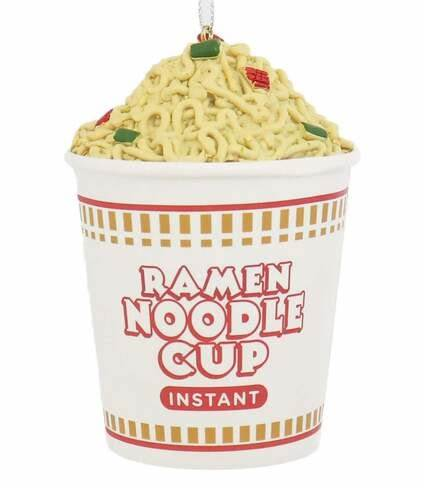

Ramen

Ramen Cups - Sodium Vessels
I have been told by many, many,
many
professionals that ramen cups are bad for you.
I do not care.
Main Menu
Ingredients
Ramen Cup
Hot Sauce
Guilt
Steps
Fill ramen cup to the marked water line.
Microwave according to instructions.
Add hot sauce until it just tastes like hot sauce.
Consume quickly (before it gets cold!)
Feel guilty later because got DAMN that's a lot of sodium.